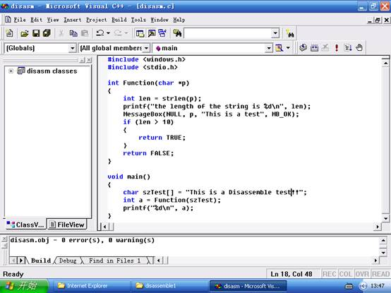
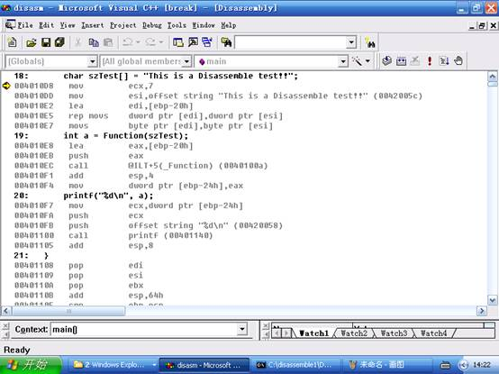
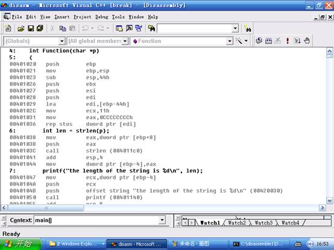
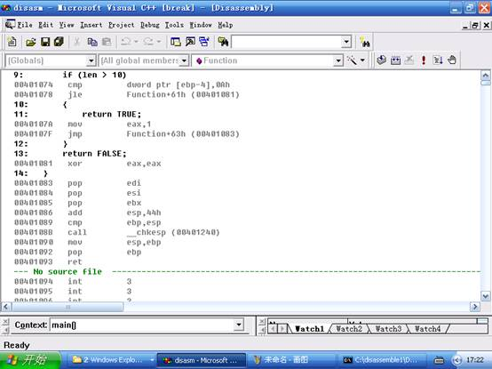

1、 复习汇编指令集，掌握基本汇编指令。
2、 学习PE格式，对PE格式有大致的了解。
3、 阅读逆向工程技术基础文档，掌握逆向工程技术相关原理。
4、 结合调试工具对简单程序完成初步逆向。具备逆向的初级能力。
1、 仔细阅读逆向工程基础文档，了解函数、变量、循环等在逆向工程中的表现形式。
2、 仔细认真观看逆向工程相关实验视频，并完成实践。
3、 根据实验内容，回答实验问题。完成拓展训练，写出实验报告。
1、基于源代码的反汇编对比学习
反汇编学习初期，最好的学习方法就是对一段已知源代码的程序进行逆向，对比学习。今天我们就做这样一个实验。
首先我们自己写几行简单的代码，如图，然后再来看看这样的一份代码最终编译出来的程序逆向后的汇编代码是怎么样的。

代码中有几点需要注意：
（1）
程序由一个主函数和一个子函数构成，主函数会调用子函数。
（2）
子函数接受主函数的一个字符串指针作为唯一参数，首先子函数计算传入参数的字符串长度并用对话框显示字串长度。最后，根据传入参数的长度是否大于10返回值为TRUE或者FALSE。
（3）
最后，子函数执行完毕后，主函数接过执行权，打印出返回值。
当对程序有一个深入的了解后，我们再看看这些高级语言反汇编后的情况。首先在主函数第一句代码处下一个断点，然后F5进入跟踪调试模式，接着再鼠标右键go to disassembly,这样我们就可以轻松的看到C源码和汇编代码的对应关系了。如下图：

（1） 一个字符串数组的赋值，在反汇编的情况下被翻译成了5条指令。首先，寄存器ECX被赋成了7，紧接着的2条指令是分别让ESI,EDI指向两个地址，其中ESI是字串的偏移地址，EDI是一个局部变量。之后就是指令REP MOVSD,这条指令有2点注意，第一，REP代表重复，重复的次数则存放在ECX寄存器中。第二，MOVD，是从ESI指向的位置拷贝到EDI指向的位置，每次拷贝4个字节，并且每拷贝一次，ESI,EDI都会向后移动4个字节。也就是说，通过这条指令会重复拷贝7次，一共4*7=28个字节。那么数一数，例子中那句This is a Disassemble
test!!，刚好28个字节，那为什么还需要有最后一条movsb指令呢？那是因为最后还有一个字串的结束符。不难理解，ebp-20h就是szTest。
（2）
接着看第二条C语言的代码。这里调用了函数Function，并传入szTest参数。结合逆向工程基础文档的关于函数部分的说明，通过堆栈传递参数，这里是首先取得了ebp-20h这个串的地址，并压栈，然后使用CALL命令调用了0x
（3）
接着是主函数的最后一条指令，由于printf函数需要2个参数,可以看到，首先压栈的是第二个参数ebp-24h，也就是返回值a，然后才是字符串%d\n。这也满足C调用的函数的规范（详见逆向工程技术基础文档）。

看完了主函数，再来看看子函数的具体实现。如上图：
（4）
可以发现在进入子函数的代码后，到真正的第一句我们写的代码之前执行了很多行指令，这里我们把它们理解为子函数执行前的初始化。那么做了些什么工作呢？效果是什么呢？首先push ebp; mov ebp, esp;这2句表明上看不出有什么作用，其实就是把EBP的初始值做一个保存，然后把当前的栈顶赋给EBP，但是回忆之前的几步，我们的程序中大量的局部变量都是使用EBP-偏移来表示，所以，这里其实是在初始化栈帧，由于在进入子函数前，参数已经压栈，同时，根据栈是向低地址生长的规律，EBP就可以很容易作为一个标准来访问参数和寄存器，EBP+偏移就是可以访问参数的值，EBP-偏移就访问子函数中的局部变量。这个问题我们可以在之后的情况中验证。
（5）
接着关键的指令，sub esp, 44h,这条指令表面是在把栈顶指针做减法，其实是在分配内存。函数中的局部变量是存放在栈结构里的，而由于栈生长是朝低地址，所以减才是分配。而之后的3条指令则是未免对程序影响，保存之前的主函数期间的寄存器的值。而之后的4条指令，其实就是一个赋值操作。把之前分配的44h的空间用0xCC来填充。每次填充4个字节，然后重复赋值了11h次。
（6）
介绍子函数的第一条C代码的汇编实现。调用了函数strlen,而参数是子函数传入的参数，再这里是使用ebp+8来寻址的，也验证了之前提到的EBP+偏移寻址传入参数的方式。

（7） 高级语言中的if比较这里变成了比较指令和跳转指令的组合。Jle指令表示小于或者等于的时候就跳转，也就是说字串长度小于0ah也就是10的时候，会跳转执行xor eax, eax，那么回忆异或的操作就能发现，这条指令其实就等同于mov eax, 00000000h，但是，区别就在于，xor这条指令只需要一个字节。长度上和执行上都做到了优化。另外这个时候直到子函数执行完毕都未再对EAX进行操作。这也验证了EAX的确是作为返回值的事实。
（8） 最后，我们看到了有连续的3个pop，跟子函数初始化的顺序刚好对应。并且还有add esp,
44h。可以看得出来，这一切都是跟初始化一一对应的。也就是因此实现了堆栈平衡。
用OD载入程序disasm_2.exe。回答以下几个问题：
1. 对整个程序的作用进行描述，主函数和子函数分别做了什么。
2. 解释局部变量为什么作用域只在函数内，而无法在函数间。
3. 用反汇编的知识解释如下现象：
Fun(int a)
{a* =2;}
Main()
{int aa=5;
Fun(aa);}//为什么aa最终等于5
Fun(int *a)
{（*a）* =2;}
Main()
{int aa=5;
Fun(&aa);}//为什么aa最终等于10
逆向工程也让我们能够有更多的机会窥视到系统的底层，让我们对程序设计的理解更上一层楼，希望借本次的实验，继续深入坚持的学习，更好的理解计算机系统的本质。